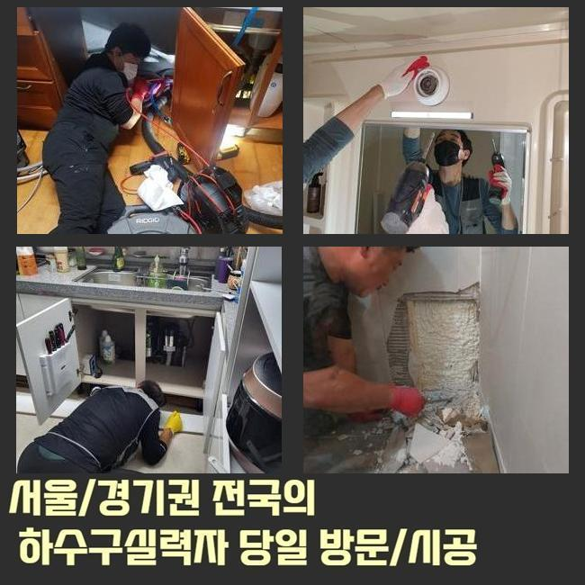
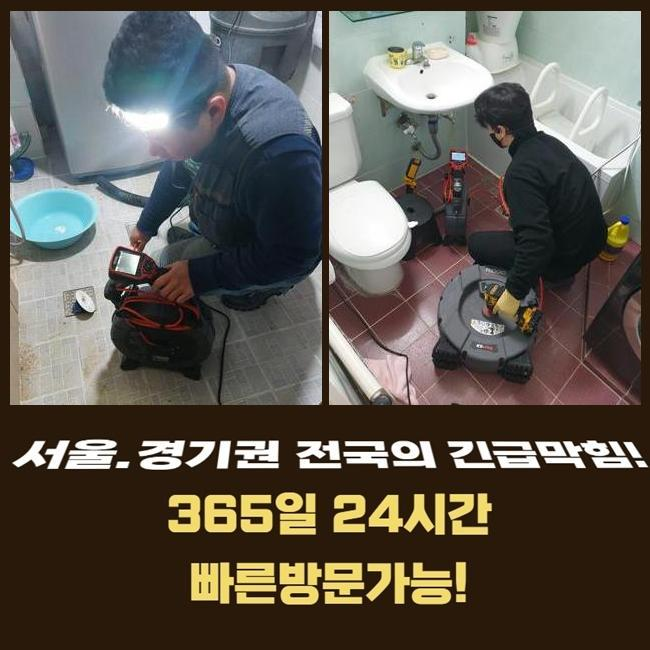
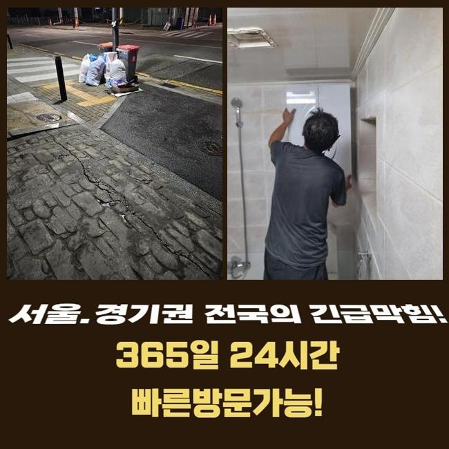
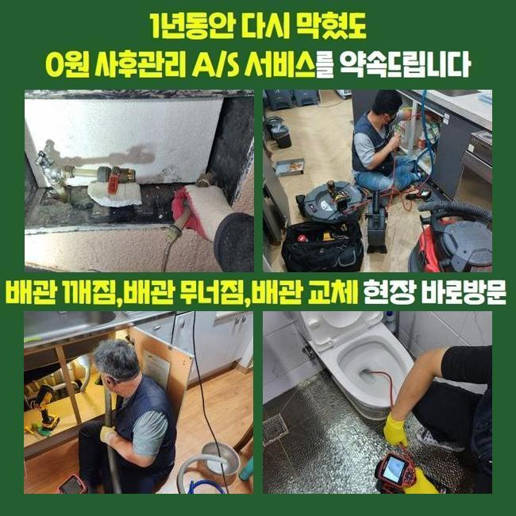
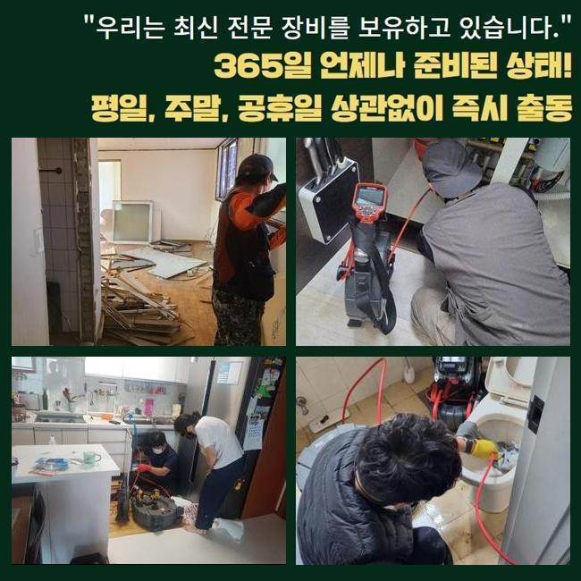
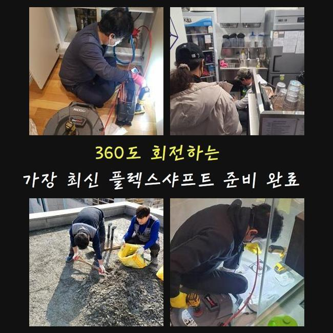
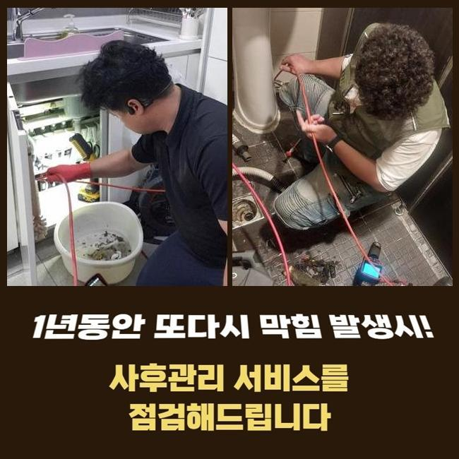

🏠 오금동씽크대막힘 대야동 배수구뚫기 통수전문
용인 싱크대막힘 전문 시공 후기

📋 작업 개요
- 위치: 용인
- 서비스 유형: 싱크대막힘, 배관막힘, 누수수리, 역류해결, 뚫는업체, 고압세척, 설비공사, 악취차단
- 작업 일시: 2025. 2. 9. 0:08
- 업체명: 하수구수사대 (010-5615-2118)
🔍 문제 상황
오금동씽크대막힘 대야동 배수구뚫기 통수전문
욕실이나 주방공간은 우리 일상의 필수인 곳인데요
그러하기에 생활하다 갑작스레 배수문제에 부닥친다면 그에 대한 파급력은 말로다 형언하기 어려울겁니다
이런 상황임에도 물내림이 원활하지 않은 사태를 내버려두고 방치해버리는 경우가 많은 편이죠
시간이 지난뒤 없어져버리거나 최소한 악화되지는 않겠다고 생각하기 때문이에요
그렇지만 현실적인 상황은 그렇게 돌아가지 않죠
그와 관련지어 그것들이 발현되었을 때 즉각적으로 정리한다면 곤란한 상황에 놓이지 않을 수 있답니다
배수성능이 약화되었다는건 가지배관이나 공용관로에서 하수 배출을 막아세우는 찌꺼기가 있단 소리죠
이물질들이 추가로 누증돼 더더욱 곤란한 상황으로 발전하기 이전에 전문가를 수소문하여 조사를 시행한뒤에 세척해나가야 하죠
저번주에 해결한 곳을 세밀하게 설명해드리고자 합니다
이같은 문제들로 고민에 처하신 분들에게 보탬이 됐으면 합니다
저희들이 방문드렸던 지점은 빌딩 안에 위치한 음식점이에요
의뢰인께서는 화장실과 주방시설에 이르기까지 전반적으로 물이 안내려간다고 말하셨죠

🔎 원인 분석
💡 전문가 진단: 정밀 진단 장비를 사용하여 슬러지의 고착 여부를 판명하고 타격/세척 작업을 실시했습니다.
완전히 정체된것은 아니라 몇시간 지나고나서는 소멸되었기에 다음에 고치자는 생각을 갖고 영업하고 있으셨다고 하네요
결과적으로 사태가 악화되어서 배수가 멈추었고 오취와 역류증세까지 발발하게 된겁니다
하수관은 상당히 길고 비좁게 구성돼 있죠
따라서 직관적으로 볼때에는 노폐물이 얼마나 있나 간파하기 어려워요
그렇기에 현장으로 이동할때는 내시경cctv를 필히 갖추어야 한답니다
내시경기기의 안에는 방수카메라가 달려있어요
그것으로 직관이 힘든 관로 내측까지 자세하게 검사가 가능한것이며 찌꺼기의 특성까지 알수있는 거예요
내시경설비를 통해 확인해본 배수관 내부는 굉장히 더러웠습니다
머리카락 등과 다양한 이물들이 적체되어 있었어요
이러한 물질들이 엉겨서 바위처럼 견고해진 모습을 보였기에 좁아진 배수길을 차단하여 물빠짐이 올바로 될수가 없었답니다
이대로 놔둔다면 크기를 더욱더 키워가며 관로에 하중을 가할수 있죠
그렇다면 더욱더 형편이 악화하는 것이기 때문에 빨리 공사해야만 하겠죠
이러한 상황에서 활용하는 기계는 샤프트입니다

🔧 작업 과정
비좁아진 공간으로도 수월하게 진입가능한 특성이 있어요
장비끝에는 노커라는 쇠붙이가 붙어서 고속으로 돌아가면서 배수관안쪽에 잔존하는 단단해진 여러가지 침전물을 분쇄해주죠
즉시 찌꺼기파쇄 시공을 시행하였는데요
전동장비와 체인노커를 연결한뒤 플렉스샤프트를 작동시켜서 단단해진 이물들을 제거해 나갔습니다
어떠한 지점에 잔존물들이 분포되어 있나 인지하여야 했기에 내시경cctv를 통한 검사도 동반진행 하였어요
내시경설비를 통해 적체량이 많은장소를 우선해서 공사한다면 한층 조속히 끝낼수가 있죠
하수관의 내측이 훼손되지않게 조심하며 노폐물들만을 정밀하게 목표하여 세척하였답니다
혹여 세정을 하는 과정에서 하수관에 충격을 가하면 파열이 일어나서 누설증세가 일어나기도 해요
그러므로 배관카메라나 분쇄장비가 준비되어야 하는것도 중요하지만 전문가의 테크닉 역시 필수적으로 따져봐야하는 부분이겠죠
이물들이 집중된 구역을 정결하게 정비하고나서 작은 조각들까지 처리하였답니다
그다음 즉각 테스트를 해보았죠
생활 하수를 단박에 관로로 흘려보냈고 정체하거나 솟아오르는 증상은 없는지에 대해 검사하였어요
빠르게 빠져나가는걸 확인했고 바로 인접한 배수시설로 넘어갔습니다
이쯤해서 마무리 짓는다면 바로 사용하기에는 괜찮겠으나 나중에 정체가 생겨날 가망성이 높기 때문이었어요
욕실내의 개별배관과 결속된 메인배관도 점검하여 노폐물 누적 상황을 파악해나가기로 합니다
화장실의 배관에서 정체가 나타나면 이어진 횡주관까지 찌꺼기가 누적되었을 확률이 높아 전체적인 하수관 세척작업을 시행하는게 합당합니다
그렇기에 메인관로에 접근해서 조사를 철저히 이행했고 초기에 생각한것과 비슷하게 관벽에 달라붙은 노폐물들을 목도할수 있었죠
횡주배관 및 그와 연결된 파이프들까지 점진적으로 세척을 진행했고 노폐물이 소멸된 깨끗한 관 내부를 발견할수 있었답니다
플라스틱 등의 용해되기 어려운 것들은 생활하시다가 다시 쌓일 수 달려있어요
그러하기에 일년에 한두번은 관련기술자에게 의뢰하여 관리하시는게 좋답니다
그리고 오래도록 배수관을 관리하는 방안들도 쉬이 이해하시도록 잘 안내해드렸죠


✅ 작업 완료
배수문제에 직면한다면 다양한 어려움을 마주하게 될것이니 애초에 그러한 일이 안나타나게 섬세하게 방예를 시행하는게 합당합니다
휴일에도 출장가능하다는 부분도 알려드렸고요
오래된 주거지에선 누수현상도 자주 일어나므로 이에 대한 수선의뢰도 많은 편이죠
이에 바로 뚫음뿐만 아니라 누설수리도 한다는 사실을 설명드렸답니다
어디에서 고장이 생겼고 언제 시작되었는지 문자나 전화로 알려주시면 한층 빠르게 시공비나 작업안내를 드릴수가 있죠
그후 말씀해주신 시각에 전문기술자가 전용장비를 갖추고 빠르게 내방해드릴 것이니 부담없이 전화주시길 당부드려요




⚠️ 베란다 누수 및 방수 관리 방법
- ✅ 비가 많이 올 때 창틀 주변이나 아래층 천장에 얼룩이 생기는지 정기적으로 확인해 보세요.
- ✅ 우수관 주변 실리콘 마감이 들뜨거나 깨진 틈새가 있는지 손상 여부를 수시로 체크하세요.
- ✅ 베란다 바닥 타일의 줄눈(메지)이 소실되면 그 틈으로 물이 침투하여 누수가 유발됩니다.
- ✅ 누수 의심 증상 발견 시 방치하면 아래층 손실이 커지므로 즉시 전문가의 진단을 받으십시오.
💡 핵심 정리
- 확실한 장비 작업(내시경 점검 및 샤프트 스케일링)으로 원인을 뿌리 뽑습니다.
- 작업 후 1년 이내에 동일한 부위 재발 시 100% 무상 A/S 서비스를 보장합니다.
- 서울 · 경기 · 인천 전 지역에 24시간 언제든 긴급 출동할 수 있도록 항시 대기 중입니다.
❓ 자주 묻는 질문 (FAQ)
🚨 용인 싱크대막힘 문제로 고민이신가요?
정확한 원인 진단과 확실한 시공으로 재발 없는 해결을 약속드립니다.
24시간 긴급 출동 | 서울 · 경기 · 인천 전지역 | 1년 내 재발 시 무상 A/S